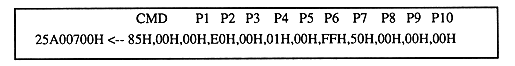

No PCM stream sound

If sound is output by this, the parameter setting value is invalid or the PCM data is invalid. If no sound is output, check the following:
symptom | cause |
|---|---|
No PCM stream sound | □ Check external connection to the speaker, volume, etc. |
| | □ Checking the sound driver operation |
| | □ Checking the sound driver version |
| | □ Is the target PCM data correctly transferred to the sound memory? |
| | □ Is the master volume of the sound source set to -∞dB (Volume = Off)? |
| | □ Is the PCM volume parameter P2 setting of the command correct? |
| | □ Are the pitch parameters P7 and P8 set correctly? |